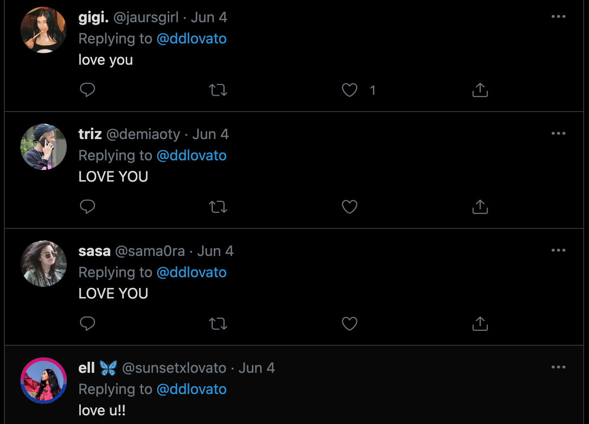

Becoming famous allows for unaccessible funds and voices to be used on causes deemed worthy by the celebrity.
Years ago—I can't remember when or where, so if the reader knows, please contact me—I read something that went like:
One of the best things you can do for humanity is to become rich and famous and use your influence to fund worthy causes.
(This makes the assumption that the person becoming rich and famous is reasonable and altruistic, both of which are not givens, but something that will still be assumed for this post for simplicity's sake.)
I wholeheartedly agree with this idea, and believe it to be especially pronounced and relevant in today's world of parasocial relationships between celebrities and their fans.
Going into a major Twitch streamer's chat can show how high of a pedestal some viewers put the streamer on. Constant messages saying the equivalent of "notice me senpai" flood the chat, with donations popping up on screen with the same message. The same thing can be seen with mentions of celebrities on Twitter (@[celebrity Twitter handle]):
happy birthday brother, you’re a literal walking W, i’ve been a fan since way way way before, back when you were a real CHOC. still loved you then man but so fucking proud of the progress you’ve made as a human...let’s hope jake somehow can follow[Smiling face with tear] @LoganPaul love you brother
and replies to their tweets, despite the tweet being nothing significant:
These people may just be all talk and no walk, as tweeting at someone is essentially free. A better metric would be to look at how much money is spent on the celebrity, especially money in which nothing tangible is received in return (i.e., donations). Yet again, an easy way to observe this is by watching a Twitch stream and its chat. All donations show up there and sometimes even pop up on screen.
There are three primary ways to use fans to help.
First, giving using others. The celebrity receives donations from fans and donates the funds to the cause(s) of their choice. This option is almost exclusively available to "influencers", e.g., YouTubers, Twitch streamers, etc. I've never heard of traditional celebrities (movie stars, music stars, athletes) directly or indirectly soliciting donations from fans, not including those who are partly influencers and produce content for YouTube/Twitch/etc. One issue I foresee is the reaction of the public if or when they find out the causes their money has helped fund, or even that it's helped at all. Moral beliefs can differ heavily between celebrity and fan, e.g., the celebrity may be pro-choice and the fan pro-life, making for a rather awkward situation when the fan discovers they've inadvertently helped out Planned Parenthood. Further, the purpose of the donation must be understood: some fans donate to enrich the celebrity's life, thinking their donation has made some positive impact on their parasocial friend, when in fact it hasn't. This can also lead to fans stopping their donations, as it no longer satisfies their donation's purpose. To avoid both of these happening, it's best to a) not disclose which causes are being supported, and b) not disclose that donations are being used to fund causes in general.
Second, having others give. The celebrity requests fans to donate money or time to a cause they deem worthy. This option is available to all celebrities who have a platform they can use to spread their word. There is little downside to this: fans will either donate to support their celebrity or simply brush it off after seeing the post. The one downside (or upside, depending on who you ask) is anti-fans donating to opposing causes just to spite the celebrity. The organization Spite Donation exists for this exact purpose. Spite donations are likely more common as the issue gets more and more controversial, while less divisive topics are less likely to produce spite donations. I do not think there is a way to reliably measure the amount of spite donations compared to legitimate donations by cause, besides manually sorting through comments attached to each donation. Facebook has adopted a version of this option and now allows users to ask others to donate to X cause on their birthday:
For my birthday this year, I'm asking for donations to [charity name]. I've chosen this nonprofit because their mission means a lot to me, and I hope you'll consider contributing as a way to celebrate with me. Every little bit will help me reach my goal. I've included information about [charity name] below.
[Information about charity]
While I rarely log onto Facebook and even more rarely see these posts, I have seen a few in which the goal donation amount of $200 was completely satisfied. If this is present in my small Facebook community, I imagine it's present in many other communities.
Third, having others serve as promoters of the cause through their various channels. This option is also available to all celebrities who have a platform they can use to spread their word. Doing this taps into communities—both online and offline—that were practically unreachable before. The fan can help promote by simply retweeting a message or trying to convince their friends and family to help this cause. On rare occasions this may create a snowball effect, with more and more communities being reached and more and more support donated to the cause. This option can be used in tandem with the second: the fan gives to the cause while promoting it themselves, e.g., "Hey, look at how I donated to this cause I believe in! You should do the same!"
After running this idea by a friend, he was skeptical this would work or be as effective as it seems:
It seems risky, too - you have about five words, and huge compression damages ideas
This is not wrong, and both compression and misinterpretation of ideas is inevitable when being transmitted from celebrity to follower. But does this really matter? In the same vein as YouTubers donating to needy people and using it for a video, money and exposure is still being given to the cause, which is better than not. The same holds for people not truly understanding or appreciating the cause due to the damage caused by compression.
Compression damage may not occur for everyone. Some may become intrigued by the cause, taking time to dive deeper into its intricacies rather than just tossing money at it based on face value.
But similar to spite donations, exposure is not always a good thing for a cause. Reaching more people guarantees reaching more opponents, who may or may not have known about the cause to begin with, who may or may not have been actively working to oppose it. Learning that this hated cause has a celebrity backing it may invigorate some to act. Yet this number is small, if not zero, and the benefits outweigh the detriments.
One way to mitigate compression damage is to attach an explanation as to why the cause is important to the request. Some may read it, others may not.
In practice, I think an approach utilizing all options is best:
This approach ensures nobody gets offended about their money going to this or that cause and no fan is forced to donate to or spread awareness about a cause.